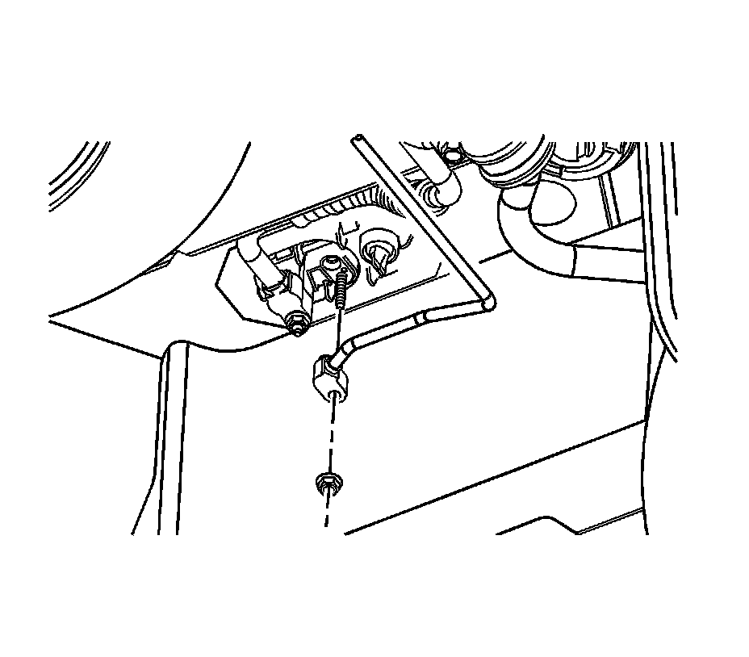
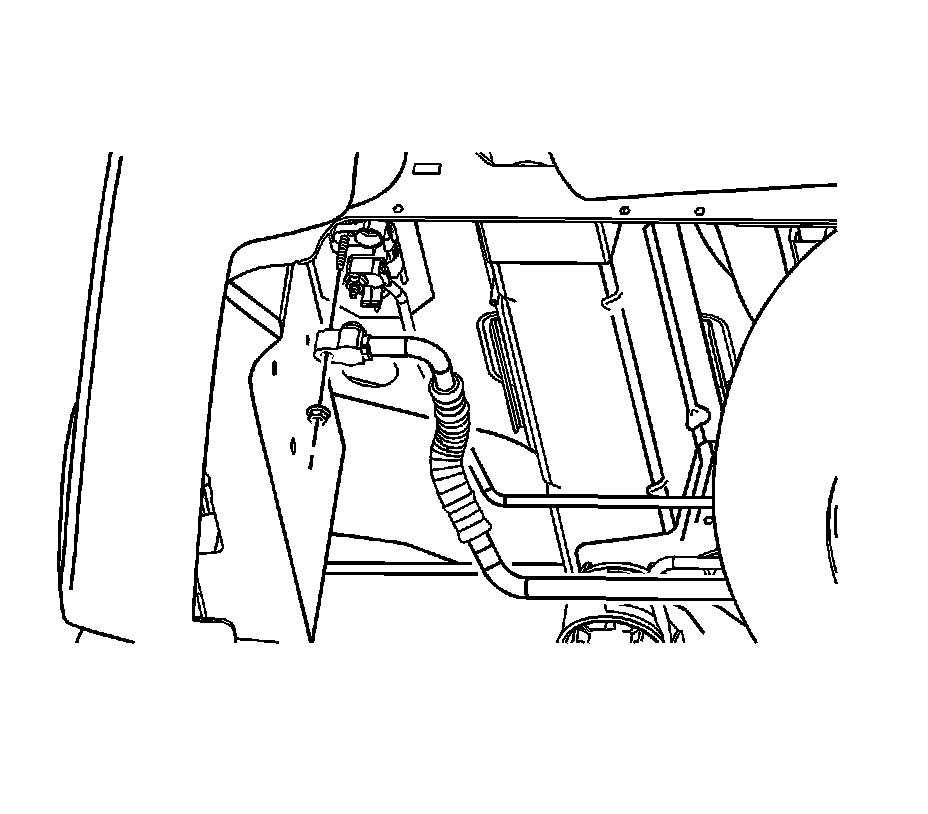
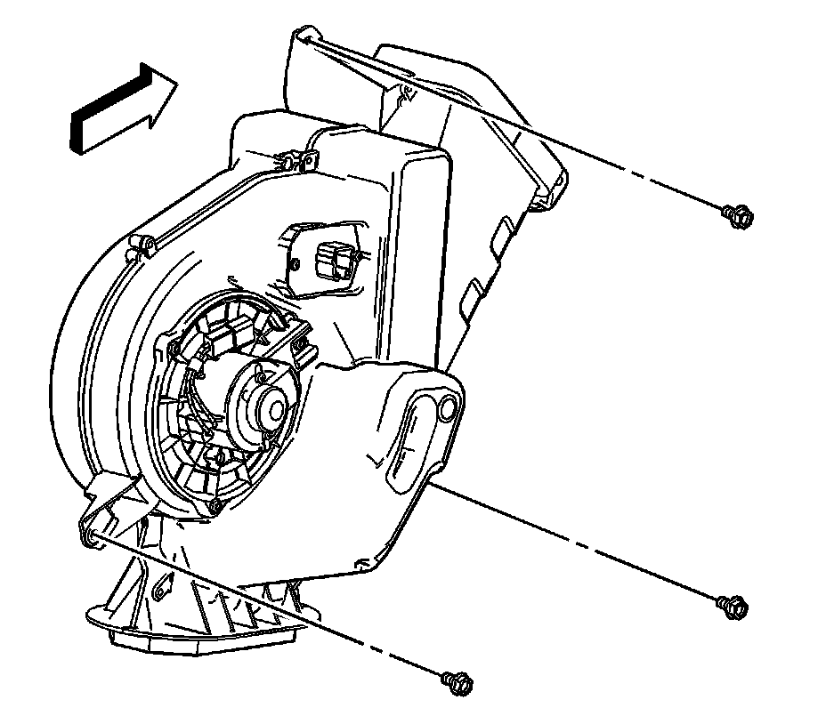

Auxiliary HVAC Module Replacement
Auxiliary HVAC Module Replacement
Tools Required
J 39400-A Halogen Leak Detector
Removal Procedure

1. Recover the refrigerant from the A/C system. Refer to Refrigerant Recovery and Recharging (Refrigerant Recovery and Recharging) .
2. Raise the vehicle. Refer to Lifting and Jacking the Vehicle (Service and Repair) .
Important: Disconnect the LH muffler from the support hangers to gain access to the auxiliary A/C lines.
3. Disconnect the LH muffler from the support hangers.
4. Remove the auxiliary evaporator inlet line nut from the auxiliary HVAC module at the underside of the vehicle.
5. Disconnect the auxiliary evaporator inlet line from the auxiliary evaporator.
6. Disconnect the auxiliary evaporator inlet line from the body retainer clip.
7. Remove and discard the O-ring.

8. Remove the auxiliary evaporator outlet line nut from the auxiliary HVAC module at the underside of the vehicle.
9. Disconnect the auxiliary evaporator outlet line from the auxiliary evaporator.
10. Disconnect the auxiliary evaporator outlet line from the body retainer clip.
11. Remove and discard the O-ring.
12. Lower the vehicle.
13. Remove the left body side trim panel. Refer to Body Side Rear Trim Panel Replacement (w/TB5) (Service and Repair)Body Side Rear Trim Panel Replacement (w/o TB5) (Service and Repair) .

14. Disconnect the electrical connectors from the auxiliary HVAC module.
15. Remove the air duct from the auxiliary HVAC module.
16. Remove the auxiliary HVAC module bolts from the vehicle.
17. Remove the auxiliary HVAC module from the vehicle.
Installation Procedure
1. Install the auxiliary HVAC module to the vehicle.
Notice: Refer to Fastener Notice .
2. Install the auxiliary HVAC module bolts to the vehicle.
Tighten the bolts to 9 N.m (80 lb in).
3. Connect the electrical connectors to the auxiliary HVAC module.
4. Install the air duct to the auxiliary HVAC module.
5. Install the left body side trim panel. Refer to Body Side Rear Trim Panel Replacement (w/TB5) (Service and Repair)Body Side Rear Trim Panel Replacement (w/o TB5) (Service and Repair) .
6. Raise the vehicle.
7. Install new O-rings to the auxiliary evaporator inlet and outlet lines. Refer to O-Ring Replacement (Service and Repair) .
8. Install the auxiliary evaporator outlet line to the auxiliary HVAC module.
9. Connect the auxiliary evaporator inlet line to the body retainer clip.
10. Install the auxiliary evaporator outlet line nut to the auxiliary HVAC module.
Tighten the nut to 9 N.m (80 lb in).
11. Install the auxiliary evaporator inlet line to the auxiliary HVAC module.
12. Connect the auxiliary evaporator inlet line from the body retainer clip.
13. Install the auxiliary evaporator inlet line nut to the auxiliary HVAC module.
Tighten the nut to 9 N.m (80 lb in).
14. Lower the vehicle.
15. Connect the LH muffler to the support hangers.
16. Recharge the A/C system. Refer to Refrigerant Recovery and Recharging (Refrigerant Recovery and Recharging) .
17. Leak test the fittings of the component using J 39400-A .